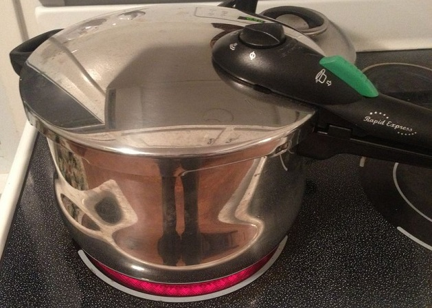

Using Pressure Cookers as Autoclaves

An autoclave, even a very small one, typically costs ~$4000. If you find yourself needing one, there's a very old standby. For small batches of agar plates or low-volume media, you can use a pressure cooker, those wonderful commercial devices that cost ~$100. Here's one tutorial and a quick search yields plenty of others as well as testimonials on the effectiveness of the method.
For those who can't get a pressure cooker for one reason or another, you might also consider Tyndallization, a semi-archaic sterilization method credited to John Tyndall
Thanks to /u/Tetrazene on Reddit for this tip!